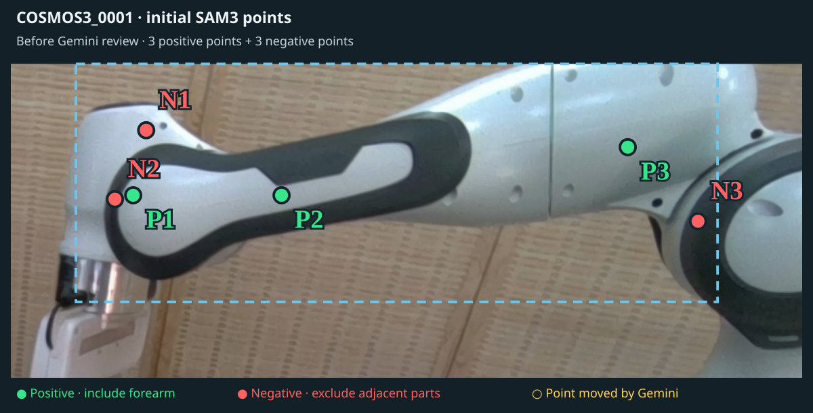
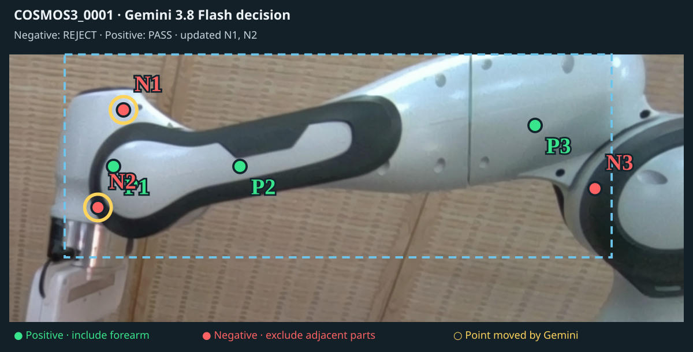
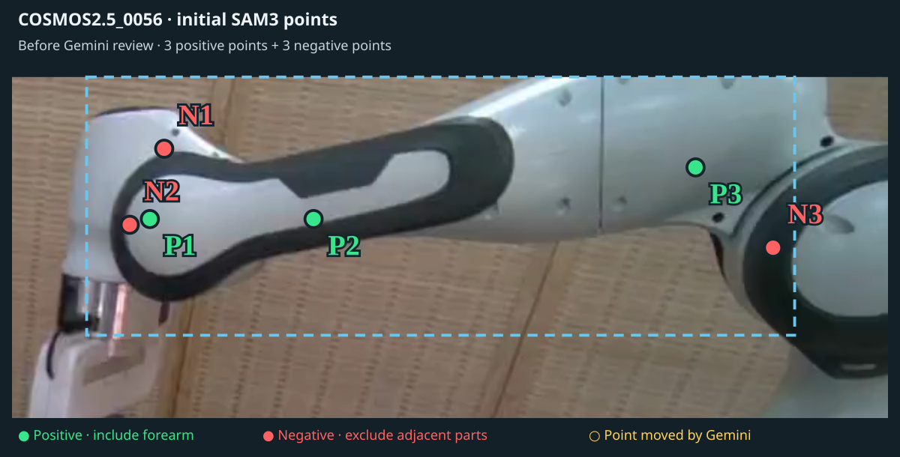
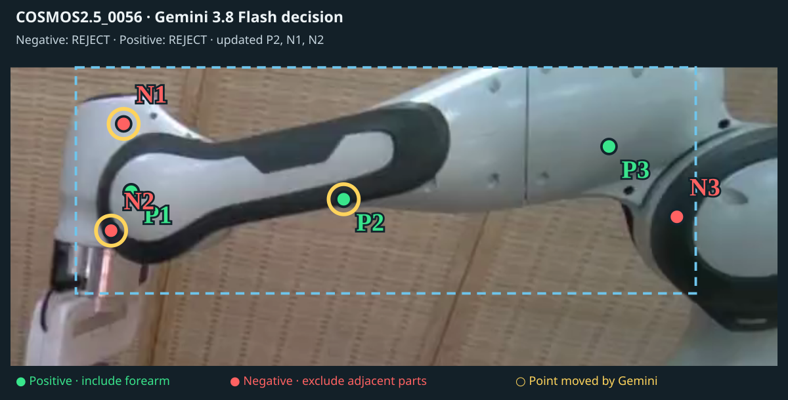
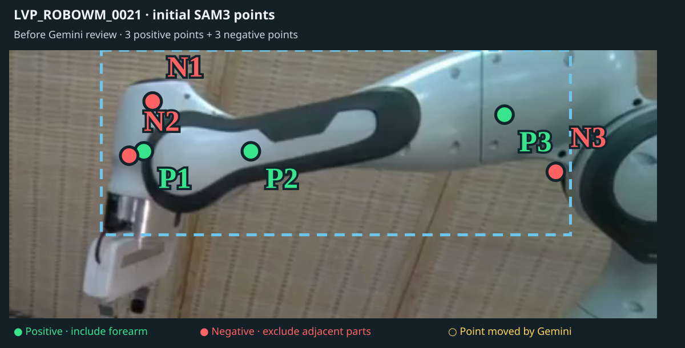

COSMOS3_0065
Gemini 3.8 Flash SAM3 prompt · seed frame 76 · 3 positive points and 2 negative points.

Original evidence · selected links · interactive 3D point clouds
Label 1 (severe deformation) versus label 0 (almost none). Moderate label 0.5 is excluded. Higher rigidity predicts deformation; ties count as half.
| Robot part | Detection method | AUROC | Severe / none | Availability treatment |
|---|---|---|---|---|
| Upper arm · link2 | V1 + CoTracker3 | 0.941 | 11 / 23 | 1 missing score; 2 nonnumeric labels excluded |
| Forearm · link5 | V1 + CoTracker3 · updated mask | 0.538 | 22 / 13 | 45 measured scores |
| Gripper · link7 | V1 + CoTracker3 | 0.845 | 17 / 14 | Measured only · 7 unavailable excluded |
| Gripper · link7 | V1 + CoTracker3 | 0.890 | 24 / 14 | Sensitivity · 7 unavailable assigned the highest score |
| Gripper · link7 | V2 + TAPIP3D | 0.842 | 24 / 14 | 45 measured scores |
The 0.890 link7 result is an assumed-score sensitivity check, not measured detection performance. All seven unavailable V1 + CoTracker3 cases have severe labels; assigning them a score above all measurements raises AUROC from 0.845 to 0.890. V2 + TAPIP3D scores all 45 videos.
Link2 uses the original workbook (AD); link5 uses v2 (AB); link7 uses v2 (AC). Gripper labels agree between the two workbooks. Link5 uses reported, rounded ε rigidity: AUROC 0.538; full-precision replay scores give 0.542. These values describe the selected videos.
Choose a replay to play, scrub, rotate the point cloud, and inspect point pairs alongside the original video. Failed and unscored cases are preserved.
Select a link title to open its interactive point-cloud replay.
| Link2 · V1 | Link7 · V1 + CoTracker3Unscored / unavailable | Link7 · V2 + TAPIP3D | Link5 · updated mask |
|---|
| Link2 · V1 | Link7 · V1 + CoTracker3Unscored / unavailable | Link7 · V2 + TAPIP3D | Link5 · updated mask |
|---|
| Link2 · V1Unscored / unavailable | Link7 · V1 + CoTracker3Unscored / unavailable | Link7 · V2 + TAPIP3D | Link5 · updated mask |
|---|
V1 scoring stopped before an interactive point-pair replay was produced. This is the original video and available mask diagnostics.


| Link2 · V1 | Link7 · V1 + CoTracker3Unscored / unavailable | Link7 · V2 + TAPIP3D | Link5 · updated mask |
|---|
| Link2 · V1 | Link7 · V1 + CoTracker3Unscored / unavailable | Link7 · V2 + TAPIP3D | Link5 · updated mask |
|---|
| Link2 · V1 | Link7 · V1 + CoTracker3Unscored / unavailable | Link7 · V2 + TAPIP3D | Link5 · updated mask |
|---|
| Link2 · V1 | Link7 · V1 + CoTracker3Unscored / unavailable | Link7 · V2 + TAPIP3D | Link5 · updated mask |
|---|
Three representative cases. Inspect the exact Gemini prompt, then play or scrub the naive and persistent masks on the same frame.
Gemini 3.8 Flash SAM3 prompt · seed frame 76 · 3 positive points and 2 negative points.
Gemini 3.8 Flash SAM3 prompt · seed frame 114 · 3 positive points and 2 negative points.

Gemini 3.8 Flash SAM3 prompt · seed frame 26 · 3 positive points and 2 negative points.

These recorded prompts come from the latest updated-mask scoring run. Earlier joint-prompt experiments are SAM tuning trials, separate from detection results. Three representative decisions: replace negative points, replace both point types, and keep points unchanged. Both pictures use the same source frame and crop; gold rings mark points Gemini moved.
Negative: REJECT · Positive: PASS · updated N1, N2


Negative: REJECT · Positive: REJECT · updated P2, N1, N2


Negative: PASS · Positive: PASS · keep all points

Accepted link7 masks now feed occlusion detection and replay, available-pixel crops, and ten-frame selection together. Original 0/2/2/2/4 quotas and earlier-interval fallback remain. If the final-interval mean falls below half of both the pooled first-80% mean and the preceding interval mean, only individual late frames below half of the first-80% mean are excluded; substantial late recoveries remain.
Exact VLM3 input pictures, output points and masking replays · Updated crop pictures · Updated occlusion replays
| Case | VLM3 input frame | Result | Selected source frames |
|---|---|---|---|
| COSMOS2.5_0056 | 9 | accepted_with_frame_exclusions | 14, 19, 20, 42, 44, 70, 71, 75, 76, 77 |
| COSMOS2.5_0005 | 6 | accepted_with_frame_exclusions | 20, 29, 41, 43, 56, 57, 58, 59, 60, 61 |
| COSMOS2.5_0010 | 11 | accepted_with_frame_exclusions | 19, 20, 46, 47, 56, 57, 58, 59, 60, 61 |
| LVP_ROBOWM_0010 | 0 | accepted_with_frame_exclusions | 10, 13, 23, 29, 30, 31, 32, 33, 34, 35 |
| LVP_ROBOWM_0015 | 0 | accepted | 11, 13, 20, 21, 38, 39, 45, 46, 47, 48 |
| LVP_ROBOWM_0060 | 0 | accepted | 11, 15, 22, 27, 37, 39, 44, 45, 46, 48 |
| COSMOS2.5_0065 | 2 | accepted | 19, 20, 46, 48, 56, 59, 84, 85, 90, 92 |
Inspect the detector’s catches alongside the original video, magnified object view, mask evidence, and rigidity history. Frame numbers are zero based.
| Open replay | Flagged frames | Caught intervals | Failed mask frames |
|---|---|---|---|
| COSMOS2.5_0015 | 38 / 93 | 53–90 | 0 |
| COSMOS3_0015 | 29 / 189 | 153–181 | 0 |
| COSMOS3_0025 | 20 / 189 | 114–115, 158–175 | 0 |
| COSMOS3_0056 | 56 / 189 | 111–151, 157–171 | 0 |
| LVP_ROBOWM_0021 | 0 / 49 | 0 | |
| LVP_ROBOWM_0040 | 9 / 49 | 33–41 | 0 |
| LVP_ROBOWM_0065 | 0 / 49 | 0 | |
| COSMOS2.5_0056 | 6 / 93 | 11–13, 39–41 | 0 |
| COSMOS2.5_0005 | 0 / 93 | None | 0 |
| COSMOS2.5_0010 | 73 / 93 | 17–56, 60–92 | 0 |
| LVP_ROBOWM_0010 | 5 / 49 | 21–22, 39–41 | 0 |
| LVP_ROBOWM_0015 | 25 / 49 | 20–44 | 0 |
| LVP_ROBOWM_0060 | 0 / 49 | None | 0 |
| COSMOS2.5_0065 | 71 / 93 | 22–92 | 0 |
Use Previous catch and Next catch to jump between flagged intervals. These are occlusion-risk annotations; original rigidity scores are unchanged.